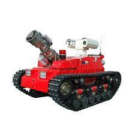
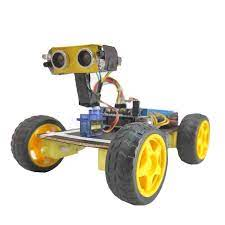
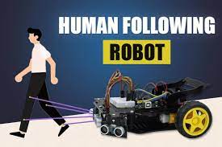
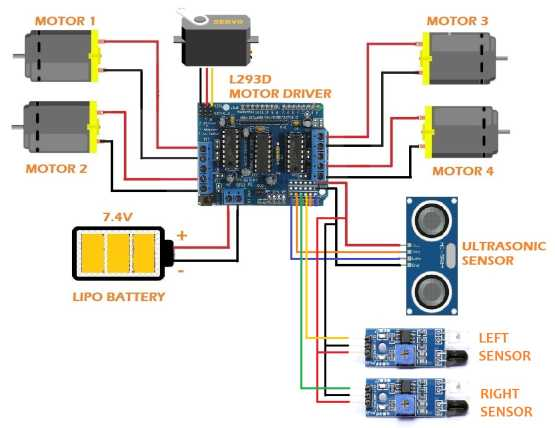

Projects

Project:1
Project Overview:
Your fire control robot project addresses a critical and potentially life-saving application – fire control and management. Fire control robots have the potential to operate in hazardous environments and assist firefighters in extinguishing fires while minimizing human risk. This project's primary objective is to develop a robot capable of navigating fire-affected areas, detecting fires, and potentially aiding in fire suppression efforts.
Technologies and Tools:
It would be helpful to know more about the specific technologies and tools you've used in this project. These may include robotics hardware (e.g., sensors, actuators, motors), software frameworks (e.g., ROS - Robot Operating System), and communication protocols. The choice of technologies can significantly impact the project's capabilities.
Functionality:
The project's design should prioritize robustness and safety. The robot's chassis, materials, and components should be heat-resistant and fireproof.
Discuss the project's sensing capabilities, such as the types of sensors used for fire detection and environmental monitoring (e.g., temperature, gas sensors).
Explain the robot's navigation and mobility features, including how it avoids obstacles and plans paths.
Detail how the robot interacts with its human operators or a control center.
Code Quality and Architecture:
Evaluate the quality of the codebase, particularly in terms of readability and maintainability.
Discuss the architecture of the software controlling the robot, including any high-level algorithms used for navigation and fire detection.
Mention any coding standards or best practices followed.
Performance and Safety:
Describe the project's performance in terms of its ability to detect and respond to fires in a timely manner.
Discuss safety mechanisms in place to prevent accidents, such as emergency stop buttons or fail-safes.
Address any challenges related to real-world fire scenarios and how the robot handles them.
Testing and Quality Assurance:
Review the testing procedures used to validate the robot's functionality and safety features.
Discuss any real-world testing or simulation environments that were employed.
Mention any test results, particularly if the robot was tested in controlled fire scenarios.
Future Considerations:
Consider discussing potential enhancements or future iterations of the robot, such as improvements in fire detection technology, greater autonomy, or more advanced navigation algorithms.
Explore opportunities for collaboration with firefighting agencies or research institutions to further develop and test the robot in real-world scenarios.



Project:2
human-following robot project focuses on a practical and potentially valuable application: creating a robot capable of autonomously tracking and following a human user. This technology can have various real-world applications, including assistance for individuals with mobility challenges and enhancing the convenience of autonomous navigation.
Technologies and Tools:
It would be helpful to know more about the specific technologies and tools you've used in this project. These may include robotics hardware (e.g., sensors, cameras, motors), software frameworks (e.g., ROS - Robot Operating System), and communication protocols. Understanding the technology stack is crucial for assessing the capabilities of the robot.
Design and Functionality:
Describe the design and appearance of the robot, highlighting any considerations for user-friendliness.
Explain the sensing and perception capabilities of the robot, such as how it identifies and tracks the human user.
Detail the navigation and control mechanisms used for following the human user.
Discuss any potential applications or scenarios where this technology could be deployed.
Code Quality and Architecture:
Evaluate the quality of the codebase, focusing on readability, maintainability, and adherence to best practices.
Discuss the architecture of the robot's control software, including any algorithms used for human detection and tracking.
Mention any coding standards or software design principles followed.
Performance and Safety:
Assess the robot's performance in terms of its ability to accurately and safely follow a human user.
Discuss safety features and mechanisms in place to prevent collisions or accidents.
Address any challenges encountered during real-world testing or scenarios.
Testing and Quality Assurance:
Review the testing procedures employed to validate the robot's functionality and safety.
Discuss any test scenarios or user trials that were conducted.
Mention any test results or performance metrics, particularly those related to the accuracy of human tracking and navigation.
Future Considerations:
Consider discussing potential enhancements or future iterations of the human-following robot, such as improving tracking accuracy, adding additional functionalities, or exploring new applications.
Explore opportunities for collaboration or partnerships with industries where such technology can be beneficial.
Overall Impressions:
Your human-following robot project showcases an innovative and practical use of robotics technology. The ability to autonomously track and follow a human user has the potential to bring significant convenience and assistance in various scenarios. The success of this project depends on factors such as tracking accuracy, safety features, and user-friendliness. As you continue to develop and refine this technology, it's important to consider real-world applications and gather user feedback to ensure that it meets practical needs effectively.